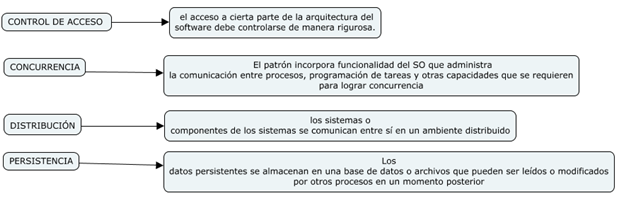
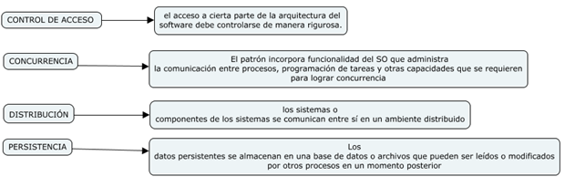

Los patrones arquitectónicos para el software definen un enfoque específico para el manejo de algunas características del sistema. Entre las características más importantes se tiene:

Los patrones arquitectónicos para el software definen un enfoque específico para el manejo de algunas características del sistema. Entre las características más importantes se tiene:

Licensed under the Creative Commons Attribution Share Alike License 4.0